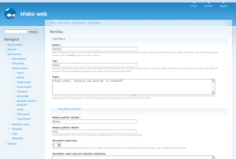
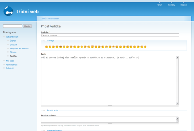
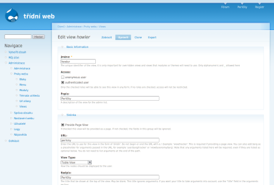
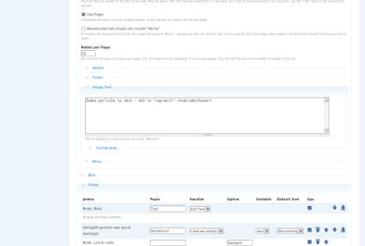
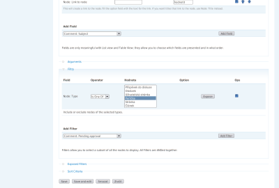
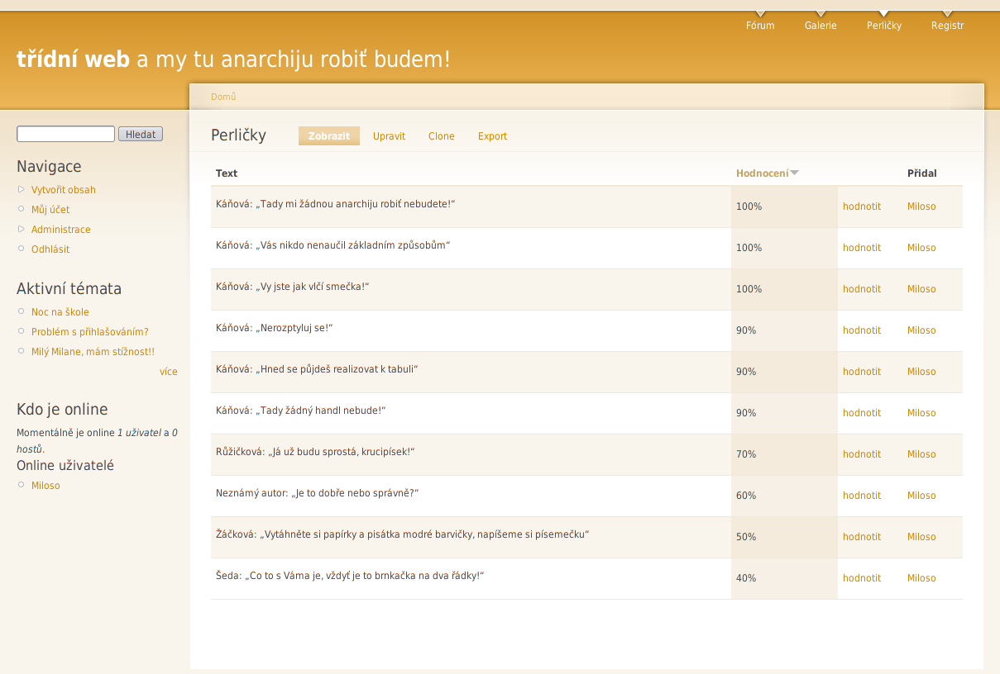

Lehký praktický úvod do pohledů - views
Pokud Vás někdy oslovil Drupal, určitě jste nalezli CCK a od té doby si život bez něj nedokážete představit. Dnes nám Milan Vít představí Views, něco, co Vašemu Drupalu dodá nový rozměr.
Co jsou Views?V dokumentaci k modulu se dočteme, že ~~Views je modul, který poskytuje flexibilní způsob, jak zajistit, aby se určitá data zobrazovala zcela podle našich představ~~ (velmi volný překlad). Dáme si příklad, dejme tomu, že chcete vytvořit tabulku s katalogem výrobků, jak byste na to šli? Vytvořili novou stránku, do ní vepsali tabulku a co řádek, to produkt, říkáte? Já ne. Myslím, že mnohem elegantnější řešení by bylo vytvořit nový typ obsahu pojmenovaný třeba Produkt, přes notoricky známý odkaz Vytvořit obsah bych vložil každý jednotlivý výrobek a následně vytvořil tabulkový pohled na tento typ obsahu.
Stručněji řečeno, pomocí views dokážete tvořit skoro jakékoliv pohledy na Vaše data. (Pokud znáte Lotus Notes, představte si CCK jako dokumenty LN a Views jako pohledy na tyto dokumenty). Pohled je něco, co vybírá z dat podle Vašich představ záznamy a opět podle Vašich představ je zobrazuje. V tabulce, v obyčejném seznamu, bloku či seznamu náhledů.
Hlavní síla Views jsou filtry. Pojďme tedy zpět k našemu příkladu a přidejme do zadání jediný bod – co takhle dát uživateli možnost zobrazit si výrobky jen určitého typu, dejme tomu šroubky? To už se stránkou s manuálně vloženou tabulkou bude skřípat, že? Pro každou kategorii novou stránku s novou tabulkou… A to nemluvím o pozdějších aktualizacích!
Podívejme se, jak jeden ukázkový pohled vytvořit – a jelikož se momentálně pokouším postavit třídní web, doufám, že nebude vadit, když opustíme šroubky a nahradíme je něčím typicky třídním, školním, něčím, bez čeho by škola nebyla ani zdaleka taková sranda – ano, mám na mysli perličky.
Instalace modulu Views je více než jednoduchá, stačí se řídit návodem již dříve na tomto serveru publikovaným. Jediná drobnost, která by Vás mohla zaskočit, je skutečnost, že balíček Views obsahuje ne jeden, ale rovnou čtyři moduly – doporučuji aktivovat všechny, kromě Views RSS. Nastal čas na vytvoření nového typu obsahu – zabrusme do Administrace → Správa webu → Typy obsahu a řiďme se přiloženým obrázkem.
Pokud na nás nevybafla žádná chyba (neměla by), mělo by být možné přidávat perličky – přidejme tedy jednu nebo dvě, na ozkoušení!
A čeká nás poslední krok, vytvoření odpovídajícího pohledu. Na stránce Administrace → Prvky webu → Views zvolte Add a zvolte tato nastavení:


- Basic information:
- Jméno: to nechám na Vás
- Access: určení, kdo má mít k pohledu přístup; pokud všichni, nechte tak, jak je
- Popis: čistě pro pozdější orientaci, návštěvníci ho neuvidí
- Stránka:
- Provide Page View: poskytovat „stránkový“ pohled; ano
- URL: pod jakou URL má být pohled dostupný?
- View Type: pro naše potřeby bude ideální Table View, co však znamenají další možnosti?
- Full Nodes: podobné, jako klasický seznam článků, s jednou malou odlišností – místo perexu se zobrazí celý článek, lhostejno jak dlouhý
- Teaser List: klasický seznam článků, jen perex
- Table View: zobrazení záznamů v tabulce; jednotlivé řádky jsou od sebe barevně odlišeny, což zvyšuje přehlednost
- List View: i když se to na první pohled nezdá, je tento způsob zobrazení v principu velmi podobný předchozímu, jen se místo tabulky použije odrážkový seznam
- Views RSS: RSS View: výstupem je RSS kanál; tato volba je dostupná jen po aktivaci modulu Views RSS
- Nadpis: nadpis pohledu, informace pro návštěvníky
- Use Pager: pokud je v tabulce více řádků, než je třeba, použít stránkování; ano
- Nodes per Page: kolik řádků je ideálních? :-)
- Empty text: co se návštěvníkovi zobrazí, pokud by neexistovaly žádné perličky? Zkuste něco motivačního ;-)
- Blok:
- Pokud bychom kromě stránkového pohledu chtěli také blok s perličkami, stačilo by vyplnit tuto sekci – my však nechceme, tak si jen dvě možnosti nastavení, které se u stránkového pohledu nevyskytují
- Nodes per Block: podobné, jako Nodes per Page, určuje, kolik záznamů se má v bloku zobrazit
- [More] link?: pokud používáme i blokový, i stránkový pohled, můžeme touto volbou vypsat odkaz vedoucí na stránkový pohled – velmi užitečné
- Fields:
- Velmi důležitá část, přidejte sem Node: Body, tedy text perličky; já též přidal VotingAPI percent vote result (average), což zobrazí hodnocení dané perličky – a jako třešnicku na dortu ještě podle tohoto sloupce celou tabulku řadím, jinak řečeno, na prvním místě bude u mě ta nejpopulárnější
- Filtry:
- Přidejme filtr Node: Type, jako Operator vyberme Is One Of a jako hodnotu zvolme Perlička – nic jiného zde nechceme
A tím jsme skončili, teď už stačí jen pohled uložit a podívat se na výsledek – pokud se Vám vše povedlo, gratuluji!

{kind=link}
{kind=link}
{kind=link}
{kind=link}
{kind=link}
{kind=link}
Super
S Drupalem začínám a tenhle článek mi fakt pomohl, je psaný hezky srozumitelně. Ještě bych uvítal nějaký článek s příklady spolupráce CCK a Views. Konkrétně bych rád viděl náledující postup: mám dva content typy. Jeden ukládá citáty, takže má třeba pole „citát“ a „autor“ – vhodnější by byl asi nějaký autorid, v tvém příkladě by to mohli být učitelé, kteří citát pronesli. A druhý content type by byl s autory těch citátů, opět by měl třeba pole „autor“ a třeba „předmět“, kde by bylo napsáno, jaký předmět ten tvůj vyučující učí nebo nějaká jeho charakteristika. Jde mi o to, jak to ve views spojit tak, že by se mi vypsala tabulka, ve které by byly sloupce s citáty a autory a po rozkliknutí u autora by se mi zobrazila jeho charakteristika z pole „předmět“. Prostě jak udělat takové joinování tabulek z PHP.
Děkuji mnohokrát za
Děkuji mnohokrát za pochvalu, opravdu mě potěšila.
Váš nápad shledávám na jednu stranu velmi zajímavým, nicméně pro v článku zmíněný „perličkový“ příklad se moc nehodí – velké části perliček, které máme teď na webu, se účastnilo více osob, třeba žák a profesor, často též více žáků a profesor – a ve Vašem řešení by nebylo dost dobře možné poznat, kdo řekl kterou větu, chápu-li tedy Váš návrh správně :-)
Ale jako ukázka by to nemuselo být vůbec špatné, domluvím se s Jakubem.
Please
Co se týká toho příkladu, tak mi jde o to, že i když jde podle mě o jednu ze základních činností, nikde jsem o tom nenašel zmínku. Třeba quote modul umožňuje zadávat citát a autora, ale to je vše, již neexistuje žádná speciální tabulka pro autory. Osobně je to pro mě klíčové, protože chci převádět pod drupal rozsáhlé stránky, kde to využiju prakticky všude: třeba u citátů, u murphyho zákonů a spousty dalšího obsahu, kde je potřeba dvojité třídění (např. do kategorie a do tabulky autorů). Ono to možná bude jednoduché jako facka, jenom přijít na ten grif a ten nikde nemůžu najít :-)
ono nejake mergovani views
ono nejake mergovani views pujde mozna pomoci Views Fusion, ale nikdy jsem to nezkousel.
moznost co me napadla hned je udelat „Autora“ jako nejakeho virt. uzivatele, kteremu vytvorite Usernode (viz. modul) a pote v tom view budete linkovat na jeho „prispevky“.
druha moznost je udelat autora jako taxonomy term (coz jde i pri zadavani node pomoci volneho vyberu) a pak umoznit Exposed filtr proti autorovi
RE
Tak jsem asi našel odpověď rovnou v jedné zdejší diskusi :-) Na této adrese: http://drupal.org/node/126113#… je postup jak jednoduše vytvořit seznam alb a písniček. I když co jsem se díval na to Fusion, tak by to mělo sloužit ke stejné věci.
nechcete to prelozit do
nechcete to prelozit do cestiny? vydam to jako clanek…
RE
To by nebyl problém, ale radši bych to nejdřív otestoval, třeba přijdu ještě na nějaké vychytávky.
vdaka za link, presne nieco
vdaka za link, presne nieco take som hladal. ide to aj opacne? k pesnicke do ktorej vkladam pole album cez cck zobrazit aj informacie o tom albume? takto mi to zobrazi len link na album. chcel by tom tam dat strucne info.
Platnost
platí tyto obrázky i ve verzi 6.x? Já to tam nemohu najít…poraďte, kde dělám chybu.
Ne bohuzel neplati
Ne bohuzel neplati